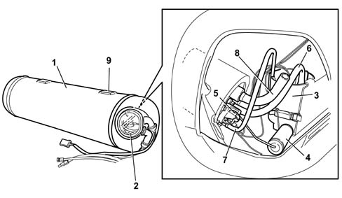
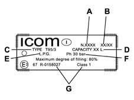

LPG TANK
- Path
- Descriptions > 10 ENGINE > 1043 GPL TANK AND PIPES > 1043A GPL TANK > LPG TANK
- Kind
- system description
- Applies to
- engines: 2.0 16V; all production periods; only with equipment: GPL
- Interactive page
- https://sloeber94.github.io/elrnDB-fDct/en/#/244000390
Applies to: engines: 2.0 16V; all production periods; only with equipment: GPL

